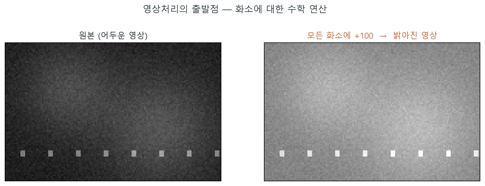
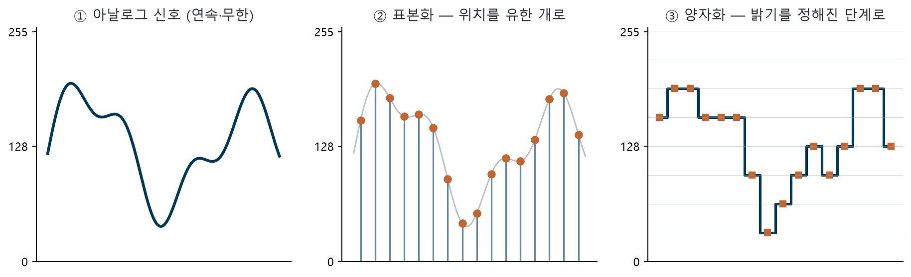
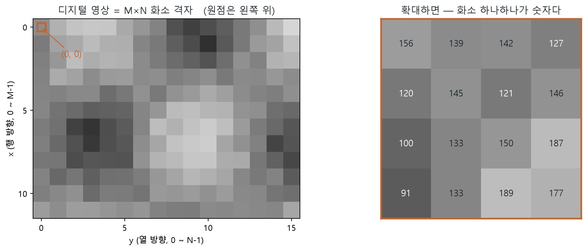
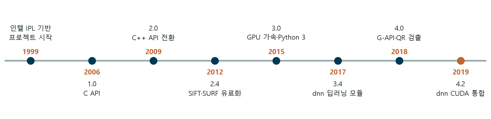
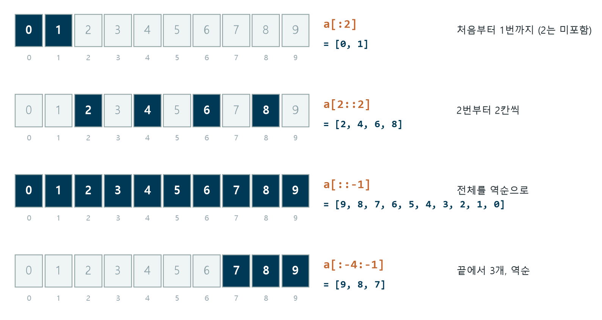
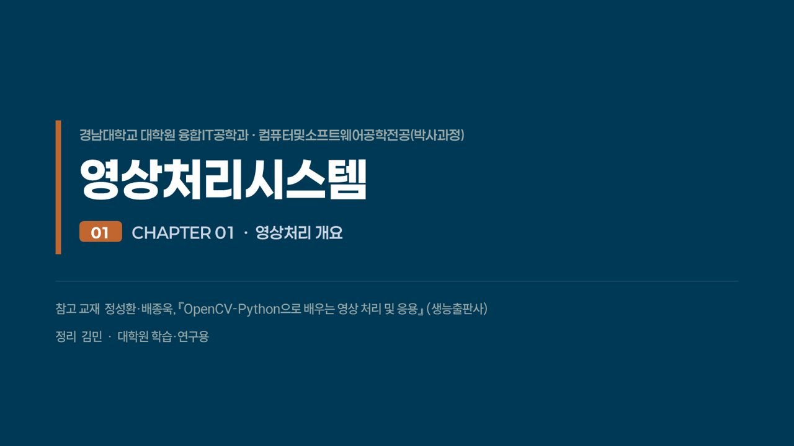

영상은 숫자 행렬이다. 화소마다 밝기 숫자가 하나씩 있고, 영상처리는 그 숫자들에 하는 수학 연산이다. 빛은 표본화(칸 수)와 양자화(밝기 단계)를 거쳐 디지털이 된다.
화소 — 영상의 최소 단위
화소 (pixel)
영상의 가장 작은 구성 요소. picture element의 줄임말로, 사진을 확대하면 보이는 네모 하나. 0(검정)~255(흰색)의 밝기 숫자를 가진다.
영상처리 (image processing)
어떤 목적을 위해 화소들에 수학적 연산을 가해 변화를 주는 기술. 처리 대상에 따라 아날로그/디지털로 나뉘며 이 과목은 디지털을 다룬다.

결과물로 나누는 두 수준
| 구분 | 결과물 | 예 |
|---|---|---|
| 저수준 영상처리 | 영상 | 잡음 제거, 밝기 조절, 선명화 |
| 고수준 영상처리 | 영상의 특성·정보 | 물체 인식, 얼굴 인식 |
달 사진에서 스마트폰까지
| 시기 | 사건 |
|---|---|
| 1920년대 | 런던–뉴욕 해저 케이블로 신문 사진 전송 — 1주일 이상 걸리던 것이 약 3시간으로 |
| 1940~50년대 | 폰 노이만 컴퓨터 개념, 트랜지스터, IC(1958) — 기술 토대 |
| 1960년대 | 본격적 시작 — 1964년 Ranger 7호의 달 영상 훼손을 JPL이 컴퓨터로 복원 |
| 1970년대 | CT · MRI 등 의료, 원격 자원탐사, 우주 항공으로 확대 |
| 1990년대~ | 인터넷·디지털 방송·디지털 카메라 — 응용 폭발, 지금은 스마트폰으로 누구나 |
비전·그래픽스와 경계 긋기
| 분야 | 입력 | 출력 | 예 |
|---|---|---|---|
| 영상처리 | 영상 | 영상 | 흐린 사진 → 선명한 사진 |
| 컴퓨터 비전 | 영상 | 서술(정보) | 얼굴 사진 → "이 사람은 누구" |
| 컴퓨터 그래픽스 | 서술(정보) | 영상 | CAD 치수 입력 → 물체 그림 |
빛이 숫자가 되기까지 — 조명 × 반사율
표본화와 양자화 — 칸을 나누고 반올림한다

표본화 sampling
연속 신호에서 몇 칸의 값만 취할지 정한다 → 화소 수, 즉 해상도 M×N이 결정. "1,200만 화소"가 바로 이 칸 수.
양자화 quantization
표본값을 몇 단계 밝기로 반올림할지 정한다 → k비트면 L = 2^k 단계. 128.345도 8비트에선 그냥 128.
실험 ① 표본화 · 양자화
실험 ② 밝기 연산 (+/−)
0보다 작아지면 0으로, 255를 넘으면 255로 잘라냅니다(클리핑). 너무 밝게 하면 흰색으로 뭉개지는 이유예요.
행렬로 읽는 영상

산업 속 영상처리
의료
CT(뼈)·MRI(연조직)·PET(뇌·심장 기능), 태아 초음파. 요즘 장비는 촬영 영상으로 3차원 재구성까지.
방송·통신
디지털 방송 압축 전송, 야구 스트라이크 존 표시, 축구장의 3D 가상 광고.
공장 자동화
산업용 카메라로 제품 불량을 자동 판별 — 이 분야를 머신 비전(machine vision)이라 부른다.
그 외
출판·사진 보정, 애니메이션·게임, 위성 기상·지질 탐사 (멀티스펙트럴 영상), 워터마킹·스테가노그라피·계산 사진학까지.
OpenCV는 2,500개+ 알고리즘을 담은 오픈 소스 컴퓨터 비전 라이브러리(1999, 인텔). 파이썬·파이참·opencv-python 설치를 끝내고 회색 창 하나를 띄우는 것이 이 장의 전부다.
OpenCV — 컴퓨터 비전의 공구함
정체
Open Source Computer Vision Library. 1999년 인텔의 IPL(Image Processing Library)을 기반으로 시작. 교재 기준 사용자 그룹 4.7만+, 다운로드 1,800만 회+.
할 수 있는 일
얼굴 검출·인식, 객체 인식, 3D 모델 추출, 이미지 스티칭(파노라마), 영상 검색, 적목 제거, 안구 추적, QR코드 검출(4.0~).
누가 쓰나
구글·야후·MS·인텔·IBM·소니·혼다·도요타. 스트리트 뷰 스티칭, 감시 침입 탐지, 수영장 익사 감지, 로봇의 물체 픽업까지.
기술 스펙
C++·Python·Java·MATLAB 인터페이스 / 윈도우·리눅스·안드로이드·macOS. MMX·SSE 고속화, CUDA·OpenCL GPU 가속 — 실시간 비전에 강함.
버전 연혁 — 20년의 진화

| 단계 | 버전 | 핵심 변화 |
|---|---|---|
| C 시대 | 1.0 (2006) | C API, 구조체 기반 자료구조 |
| C++ 전환 | 2.0 (2009) ~ 2.4 | 클래스 기반, 12개 모듈 재구성(2.2), SIFT·SURF 유료화(2.4) |
| GPU·모바일 | 3.0 (2015) ~ 3.4 | OpenCL 투명 가속, Python 3 지원, dnn 딥러닝 모듈(3.4) |
| 딥러닝 시대 | 4.0 (2018) ~ | G-API, QR코드 검출기, dnn CUDA 통합(4.2) |
파이썬이라는 짝 — 실험에 최적화된 언어
기본 정보
귀도 반 로섬(Guido van Rossum)이 1991년 발표. 고급 언어, 플랫폼 독립, 객체지향, 동적 타입의 대화형 언어.
인터프리터 방식
소스를 1행씩 해석해 즉시 실행. 실험과 수정이 빠르다(↔ 컴파일 방식은 전체 번역 후 실행, 속도가 빠름).
개발 환경 구축 로드맵
| 단계 | 할 일 | 주의 |
|---|---|---|
| 1. 파이썬 | python.org → Downloads → 설치 | 'Add Python to PATH' 체크 필수 |
| 2. 파이참 | JetBrains Community(무료) 설치 | 설치 옵션 전부 체크 무방, PATH 필수 |
| 3. 인터프리터 | Settings → Python Interpreter → python.exe 연결 | 미연결이면 실행 자체가 안 됨 |
| 4. 프로젝트 | New Project → 챕터별 폴더 → Python File | 'Create main.py' 체크 해제, 실행 Shift+Alt+F10 |
라이브러리 설치와 첫 프로그램
import numpy as np import cv2 image = np.zeros((300, 400), np.uint8) # 300행 400열 행렬 = 검은 영상 image.fill(200) # 모든 화소를 200(회색)으로 cv2.imshow("Window title", image) # 행렬을 창에 영상으로 표시 cv2.waitKey(0) # 키 입력까지 대기 cv2.destroyAllWindows()
실험 — 02.opencvtest.py 시뮬레이터
OpenCV에 필요한 파이썬 최소 문법 세트. 종착지는 넘파이 ndarray — OpenCV의 영상이 곧 ndarray이기 때문. 슬라이스와 shape는 앞으로 매일 쓰게 된다.
리터럴 · 상수 · 변수
| 개념 | 정의 | 예 |
|---|---|---|
| 리터럴 | 값 그 자체 | 4, 3.14, 'This is Python', True, None |
| 상수 | 파이썬엔 const 없음 → 대문자 변수 관례 | MAX_SIZE = 100 |
| 변수 | 값이 든 기억 공간, 자료형은 할당 때 결정 | x = 100 (동적 타입) |
값을 담는 네 가지 그릇
리스트 [ ]
추가·삭제·변경 자유. 자유로운 줄 세우기. insert(3,'b')를 하면 뒤 원소가 밀린다.
튜플 ( )
어떤 변경도 불가 — 잠긴 리스트. tuple1[0]=5 는 에러(TypeError).
사전 {키: 값}
이름표 달린 서랍. dict1['email']처럼 키로 접근해 읽고 바꾼다.
집합 set()
중복 없애는 체. 중복 원소는 하나만 남는다. & 교집합, | 합집합, − 차집합.
명령행 문법 — 줄을 잇고 나누는 법
| 문법 | 하는 일 | 예 |
|---|---|---|
| \ 역슬래시 | 한 명령을 여러 줄로 | days = (year-1) * ratio + \ |
| [ ] 안 줄바꿈 | 리스트는 \ 없이도 여러 줄 OK | months = [31, 28, … |
| ; 세미콜론 | 한 줄에 여러 명령 | day = 7; ratio = 365.2425 |
| , 다중 할당 | 여러 변수 동시 선언 | year, month = 2020, 1 |
연산자 — 헷갈리는 것만 정확히
/ vs // vs %
5/2 → 2.5 (항상 실수) · 5//2 → 2 (몫만) · 5%2 → 1 (나머지). 3**3 → 27 (거듭제곱).
우선순위 큰 그림
괄호 → ** → 곱셈류 → 덧셈류 → 비교 → 논리 → 할당(꼴찌). 헷갈리면 괄호를 쓰면 그만.
슬라이스 — [시작 : 끝 : 간격]

실험 ③ 슬라이스 놀이터
조건과 반복 — 파이썬다운 세 가지
# if - elif - else : 블록은 들여쓰기, 헤더 끝은 콜론(:) if (year % 4==0) and (year % 100 != 0): print(year, "는 윤년입니다.") elif year % 400==0: print(year, "는 윤년입니다.") # while - else : break 없이 끝나야 else 실행 (for-else도 동일) while n>=0: if int(m)==0: break else: print('4 inputs.') # for의 네 얼굴 — 상황에 맞게 고른다 for i in range(0, 5): ... # 번호로 for k in kor: ... # 원소로 for i, k in enumerate(kor): ... # 번호+원소 for k, e in zip(kor, eng): ... # 두 리스트 나란히
함수와 모듈
함수 — 반환도 여럿
return a, b → 튜플로 반환. area, msg = f(...)로 풀어 받고, 안 쓸 값은 _로 버린다. 기본값 인수 c=None.
모듈 — 함수 모음 .py
import 파일 as 별명 / from 파일 import 함수. import cv2, import numpy as np가 바로 이 문법.
넘파이 — 영상의 그릇
import numpy as np a = np.array([1, 2, 3]) # int32 b = np.array([4, 5.0, 6]) # 5.0 때문에 float64 a + b # [5. 7. 9.] — 반복문 없이 전체 연산 np.zeros((2, 5), np.int32) # 0으로 채운 2행 5열 np.full(5, 15, np.float32) # 15로 채운 1차원 5개 np.random.seed(10) # 시드 고정 → 같은 난수 (재현성) d.reshape(2, -1) # -1 = 나머지는 자동 계산 a.flatten() # 다차원 → 1차원
자료실 — 강의 PPT 내려받기
강의 슬라이드 미리보기

원본이 필요하면 상단의 PPT 내려받기 버튼으로 챕터별 .pptx 파일을 받을 수 있습니다. 발표자 노트(각 슬라이드의 설명 멘트)는 PPT 파일 안에 들어 있어요.